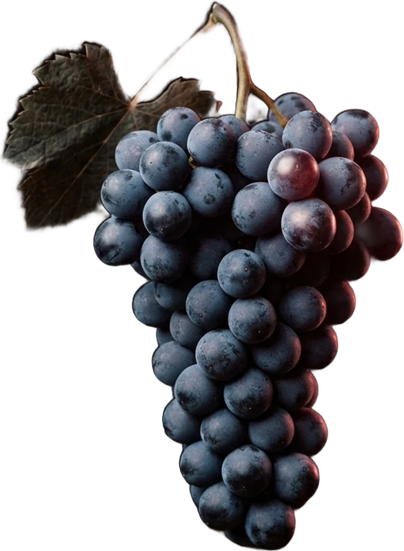

Passie. Smaak. Vakmanschap.

Een besloten WhatsApp-club voor wijnliefhebbers. Maarten kiest exclusieve flessen uit die je rechtstreeks kunt bestellen, vaak in kleine oplages en altijd met een verhaal.